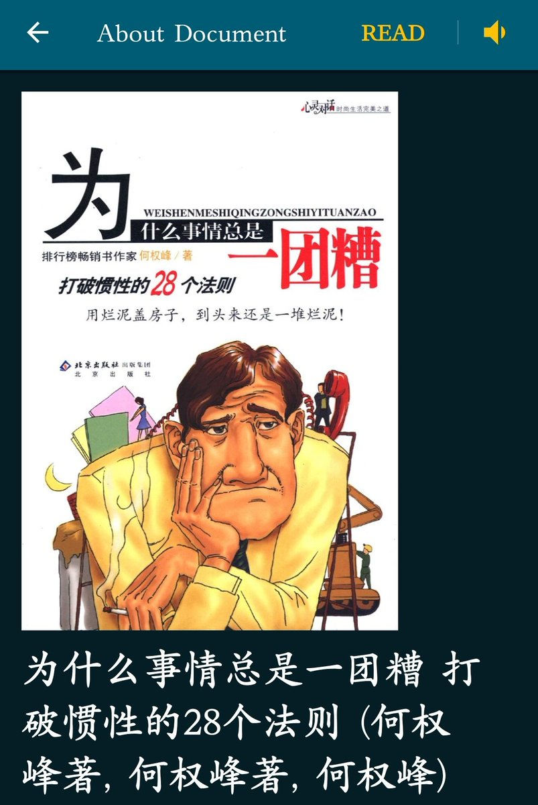

大狐帝国史官邹智萱（笔名段歌文）
@Rococo90933671
这本书还是十几年前在小学图书馆读到的。
毕业多年，不知道现在变成什么样了。当年，小学的图书馆还是一个小小的房间，带着一种属于那个年代的、刻板印象的老气——很多书都泛旧发黄不说（因为任何年代的图书馆都不可能没有这种情况），而且书架好像还是木制结构，涂漆的那种。
对，没错！漆是精髓，就是那种感觉！
好怀念呀……可是一想到还要经历一次学生时代，就不想再回去了……
